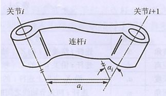
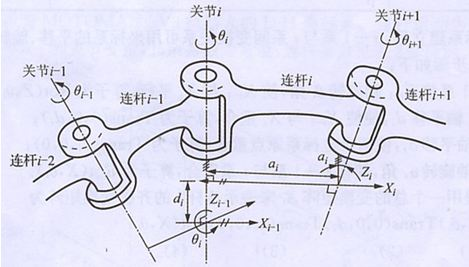
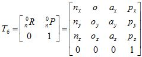

3.1 工业机器人的运动学分析
3.1.2工业机器人运动学
1、连杆参数的关节变量
图3-7所示为机器人手臂的某一连杆，连杆i两端有关节i和i+1。描述该连杆可以通过两个几何参数：连杆长度和扭角。由于连杆两端的关节分别有其各自的关节轴线，通常情况下，这两条轴线是空间异面直线，那么这两条异面直线的公垂线段的长a即为连杆长度，这两条异面直线间的夹角αi 即为连杆扭角。
图3-7连杆的几何参数
如图3-8所示，相邻连杆i与i—1的关系参数可有连杆转角和连杆距离描述。沿关节i轴线两个公垂线间的距离d即为连杆距离；垂直于关节i轴线的平面内两个公垂线的夹角θi 即为连杆转角。
这样，每个连杆可以由四个参数来描述，其中两个是连杆尺寸，另外两个表示连杆与相邻连杆的连接关系。当连杆i旋转时，θi 为关节变量，其他三个参数不变；当连杆进行平移运动时，di 为关节变量，其他三个参数不变。这种描述机构运动关系的规则称为Denavit-Hartenberg方法，简称D-H方法.已知各个关节变量的值，便可从基座固定坐标系通过连杆坐标系的传递，推导出手部坐标系的位姿形态。
图3-8连杆的关系参数
2、 连杆坐标系和齐次变换
为了确定各连杆之间的相对运动和位姿关系，在每一连杆上固接一个坐标系。与基座（连杆0）固接的称为基坐标系，与连杆1固接的称为坐标系{1}，与连杆i固接的坐标系称为坐标系{i}。
建立连杆坐标系的规则如下：
(1)连杆i坐标系的坐标原点位于i+1关节轴线上，是关节i+1的关节轴线与i和i+1关节轴线公垂线的交点。
(2)Z轴与i+1关节轴线重合。
(3)X轴与公垂线重合，从i指向i+1关节。
(4)Y轴按右手螺旋法则确定。
3、工业机器人的运动学正解
通常把描述一个连杆坐标系与下一个连杆坐标系间相对关系的齐次变换矩阵叫 Ai变换矩阵，简称Ai 矩阵。如A1 矩阵表示第一个连杆坐标系相对固定坐标系的位姿；A2 矩阵表示第二个连杆坐标系相对第一个连杆坐标系的位姿；Ai 表示第i个连杆相对于第i—1个连杆的位姿变换矩阵。那么，第二个连杆坐标系在固定坐标系中的位姿可用A1 和A2 的乘积来表示，即：
T2=A1A2
依此类推，对于六连杆机器人，有下列矩阵：
T6=A1A2A3A4A5A6
该等式称为机器人运动学方程。方程右边为固定参考系到手部坐标系的各连杆坐标系之间变换矩阵的连乘；方程左边 T6表示这些矩阵的乘积，即机器人手部坐标系相对于固定参考系的位姿，可写成如下形式：
分析该矩阵：前三列表示手部的姿态；第四列表示手部中心的位置。
4、工业机器人的运动学逆解
反向运动学解决问题的问题是：已知手部的位姿，求各个关节的变量。在机器人的控制中，往往已知手部到达的目标位姿，需要求出关节变量，以驱动各关节的电机，使手部的位姿得到满足，这就是运动学的反向问题，也称逆运动学。